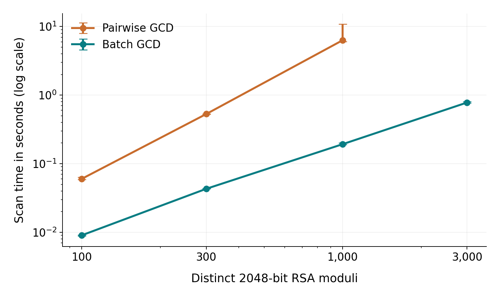

RSA KEY GENERATION
Shared prime factors.
Recoverable private keys.
A public relationship can expose a 2048-bit RSA key.
Batch detection and verified RSA-OAEP decryption
Controlled local experiments. Algorithm reference: Heninger et al., USENIX Security 2012, §3.3.
MEASURED PERFORMANCE
Batch GCD at 3,000 moduli

| Moduli | Pairwise | Batch |
|---|
Same saved inputs and GMP backend, 3 runs per condition. Median seconds with observed min/max. Native scanner time includes preprocessing, algorithm and fallback. Key generation and decryption are excluded.
PUBLIC INPUT ATTACK
102 records. 100 distinct RSA moduli.
Saved experimental evidence. Run run_demo.cmd for the live Python attack.
- Public inputsModuli, exponents and OAEP ciphertexts
- Shared-factor detectionBatch GCD with full-overlap fallback
- Private-key recoveryValidated factors, modular inverse and OAEP
- Independent verificationGround truth enters after the attack
PUBLIC INPUT
100distinct 2048-bit moduli
Two duplicate records preserve their original identities.
KEY REPLACEMENT
Fresh keys remove the observed shared factors
factorable distinct moduli
shared factors detected
This checks one input collection and one weakness. Previously exposed keys and messages remain compromised.
CONCLUSION
Key length cannot compensate for shared primes
RSA needs reliable, independent prime generation.
ADetection engine, tree algorithms, edge cases and animations
BDatasets, key recovery, OAEP validation and measured experiments
Source, fixed public samples, measured CSV records and replay instructions are included. English speaking notes